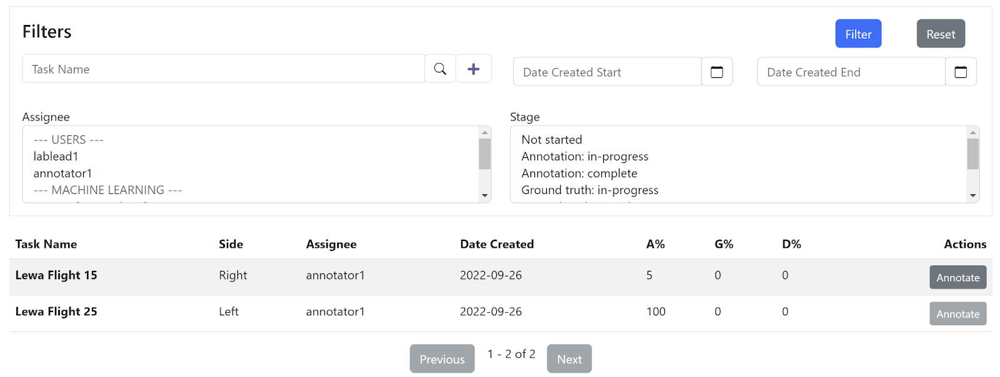

Getting Started#
Your Lab Lead will provide you with the URL to Scout, as well as your username and password. Once you have these, open your browser on your local computer and connect to Scout. Use your username and password to log in.
Note
Log out of Scout after your work. Scout does not automatically log you out, so doing it manually protects your account and work.
Finding Your Tasks#
After login, you should see the Tasks page as a landing page. The page is filtered beforehand to your assigned tasks. Use filters to find specific tasks to annotate. 
The Tasks view has a Filters section, which allows you to filter tasks visible on the page. Click Filter to apply the filters and Reset to set all filter parameters back to their default unfiltered state. Available filters include:
Task Name - display tasks to those matching the specified selection of characters
Date Created Start and Date Created End - filter displayed results to the tasks created within this range. Note that this is task creation and has nothing to do with the dates of images in the tasks.
Assignee - filters tasks to specific users
Stage - filters tasks to their stage in the annotation, ground truth, and line division workflow
A table of Scout tasks filtered to your user account as well as selections in the Filters section. Table columns include:
Task Name - name given to the task when it was created.
Side - side of the airplane that images in the task were from, Left or Right
Assignee - user assigned to the task
Date Created - creation date of the task
A% - percentage of image annotation complete in the task
G% - percentage of image ground truth review complete in the task
D% - percentage of image division line annotation complete in the task
Annotate button - if images are still available for annotation in the task, provides access to the annotation page
Next button - provides access to subsequent rows of table data if more tasks match the filter criteria than can be displayed in the table
Previous button - provides access to previous rows of table data if more tasks match the filter criteria than can be displayed in the table